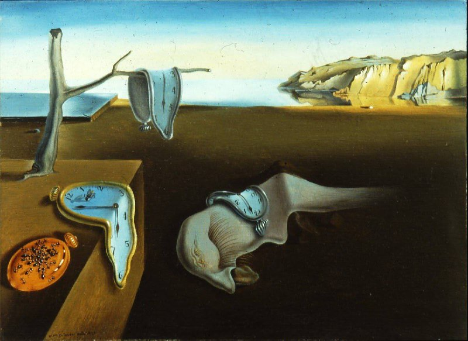

← Барча мақолалар
«Xotiraning abadiyligi"

Salvador Dali, 1931 yil
Salvador Dali - afsonaviy surrealist, rassomlar orasida yulduz va nihoyatda g'ayrioddiy shaxs.
Bu asar, Salvador Dalining eng taniqli surreal rasmidir, u yumshoqlik va qattiqlikni o'zida mujassam etgan, makon va vaqtning nisbiyligini anglatadi. U asosan Eynshteynning nisbiylik nazariyasiga asoslanadi.
Muallif bizga surreal san’at asari orqali umrning o’tkinchiligini va vaqt shiddatini rasm orqali namoish etadi. Ammo bu asarning unikalligi shundaki insonni tafakkur qilishga va borliq haqida turli hulosalarni kuzatishga imkon yaratadi.